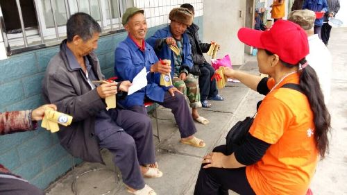

攀枝花志愿助残服务活动展示
桂电志愿者网 日期：2015-05-25 来源：
5月17日是第二十五次全国助残日，为大力弘扬“奉献、友爱、互助、进步”的志愿精神和人道主义精神，在全社会掀起关注残疾人事业发展的热潮，形成扶残助残的良好社会风尚，攀枝花团市委以“心手相牵 共享阳光”为主题广泛组织青年志愿者开展志愿助残活动。
仁和团区委联合区残联、仁和区青年志愿者协会、梓丹社会工作室开展“这里仁和·我们共青春”残健青年联谊活动，55名残疾青年和58名青年志愿者参加活动。开展了优秀残疾青年励志演讲、现场交流、文艺演出、心灵拓展游戏等活动。
东区团委联合东区志愿者协会组织30余名青年志愿者到东区敬老院开展“心手相牵共享阳光”阳光助残送温暖活动，为40余名老年残障人士带去食物和水果，帮老人们捶腿、捏背、洗衣服，开展心理辅导、爱心交流等互动活动。
米易团县委积极组织25名青年志愿者们到普威镇敬老院开展志愿助残活动，青年志愿者们与老人们聊天谈心，并为老人们表演快板、小品等节目，丰富了老人们的文化生活。
西区团委联合西区残联组织15名青年志愿者到残疾人青少年家中开展志愿助残走访慰问活动，为残疾青少年送去生活永平和学习用品，对残疾青少年开展心理疏导、作业辅导等服务。
盐边县团委开展“心手相牵共享阳光”助残日活动，组织30名青年志愿者到县福利院看望、陪伴孤残老人。活动中，为孤残老人送去了牛奶等物资，志愿者们通过打扫卫生、整理床铺，陪老人聊天、讲笑话、给老人捶背、剪指甲、表演自编自演的文艺节目等让老人们感受到节日的气氛，感受社会的关爱，受到了老人们的欢迎。
团市委还针对残疾青少年，积极组织助残青年志愿者采取“一对一”、“多对一”结对帮扶等形式，通过上门服务、面对面服务，实现志愿助残“实打实”。志愿致残活动的广泛开展，真正为残疾人士送去了帮助和温暖，志愿助残理念深入人心，志愿助残逐渐成为人们的自发意识和自觉行为。

【责任编辑：李博晶】